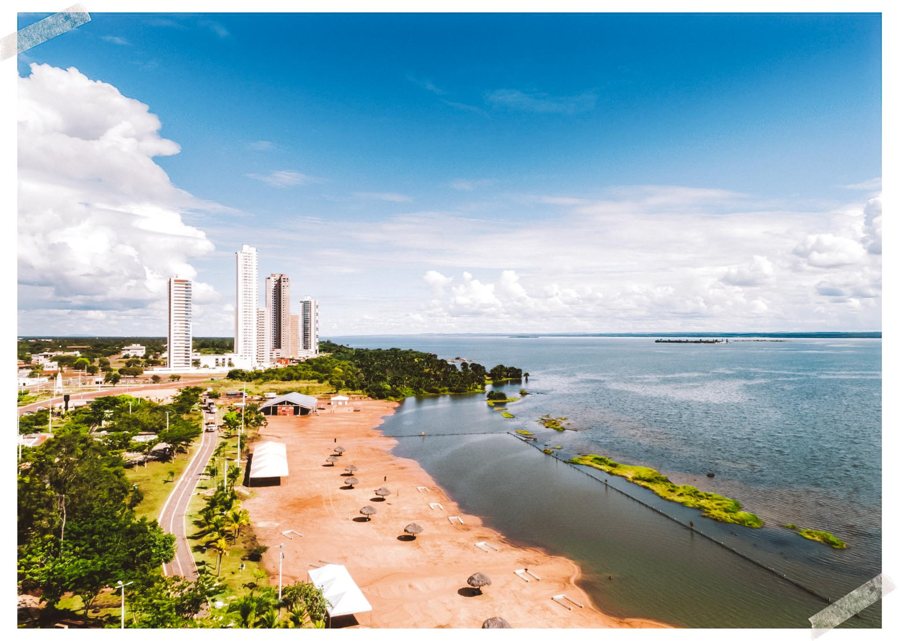

Tocantins é um estado localizado na região Norte do Brasil, com uma população de aproximadamente 1,6 milhão de habitantes. Sua capital é Palmas, uma cidade moderna e planejada, que se destaca por sua arquitetura e infraestrutura. Entre os principais pontos turísticos de Tocantins estão o Jalapão, conhecido por suas paisagens deslumbrantes, dunas, cachoeiras e rios cristalinos, o Parque Estadual do Cantão, que oferece uma rica biodiversidade, e o Rio Tocantins, importante para a economia e lazer na região. Quanto ao governador atual, até outubro de 2023, o governador de Tocantins é Wanderlei Barbosa.
